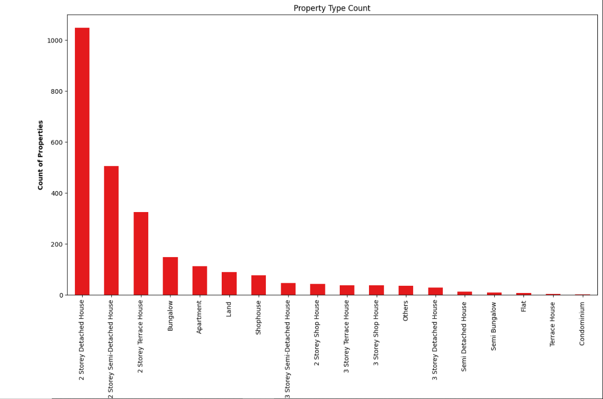

Average Property Prices In Brunei
I’ve collected a small datasets of around 3,000 property listing from 23 different Property Agents such as G.A Real Estate Agency, Bruworld Real Estate and Property Management Sdn Bhd, Bess Perfect Property Agency, Valor Property, Homestage Realty, Pan Villa and various agencies.
From my findings, the top 3 most popular property listing type are:
1. 2-Storey Detached House.
2. 2-Storey Semi-Detached House.
3. 2-Storey Terrace House.

{kind=link}
I’ve selected the top 10 locations with the most property listing count for each of the popular property type so as to have an accurate representation of the average prices at each location.

The Average Price of 2 Storey Detached House by location:
1. Mata-Mata - $460,441
2. Jangsak - $414,655
3. Jerudong - $410,358
4. Subok - $407,708
5. Kilanas - $389,442
6. Selayun - $358,851
7. Sengkurong - $332,784
8. Mulaut - $300,636
9. TanjongNangka - $277,118
10. Lumapas - $254,611
The Average Price of 2 Storey Semi-Detached House by location:
1. Mata-Mata - $345,529
2. Subok - $310,172
3. TanjongBunut - $290,833
4. Jangsak - $289,267
5. Jerudong - $281,226
6. Kilanas - $274,077
7. Sengkurong - $272,385
8. Mentiri - $270,017
9. TanahJambu - $261,429
10. TanjongNangka - $235,867
The Average Price of 2 Storey Terrace House by location:
1. Beribi - $266,286
2. Tungku - $261,895
3. Jangsak - $256,833
4. Subok - $246,357
5. Mulaut - $240,308
6. TanjongBunut - $239,047
7. Mata-Mata : $239,000
8. Kilanas - $228,714
9. Jerudong - $226,182
10. Serasa - $201,500
Note:
1. Prices are in BND.
2. Outliers are removed for property listing prices above $1,000,000 because it will affect the average prices.
There are other various factors to consider when pricing the property aside from the property location and the property type. Other factors is the property size, number of rooms, property status (proposed, under construction, ready-built), permanent or on-lease.
3. There’s a couple of missing values for the property size which makes it quite difficult to determine the degree of correlation between the price of property and the size of property.